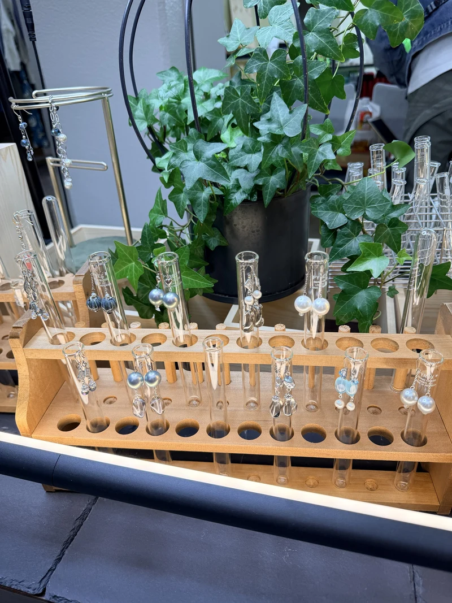
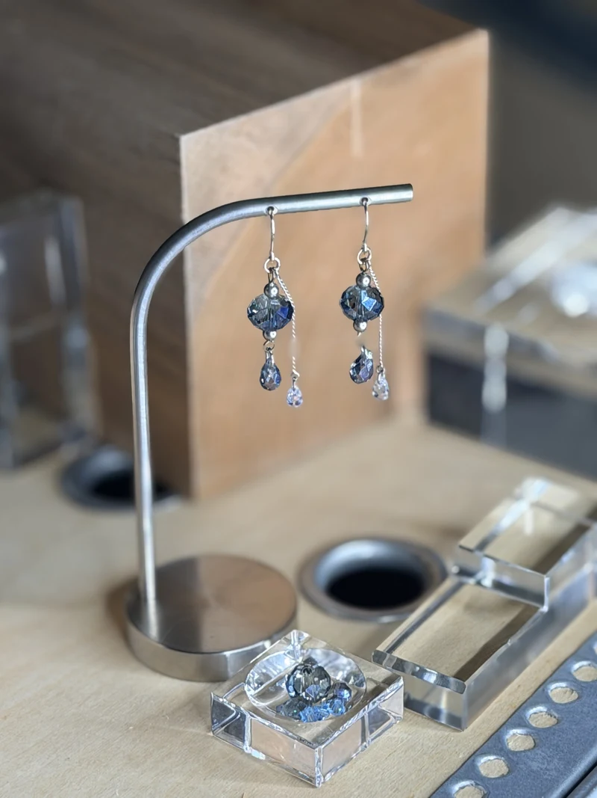
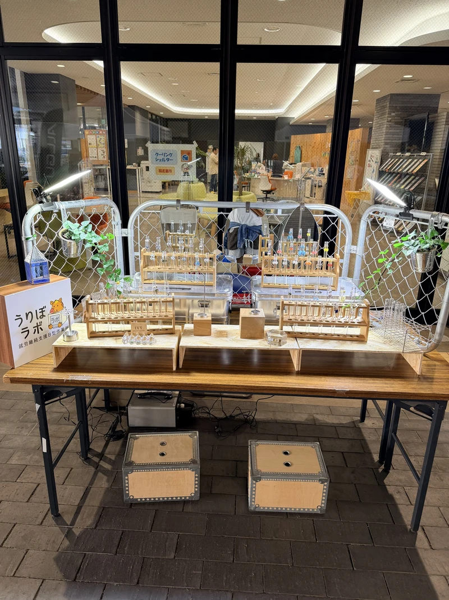
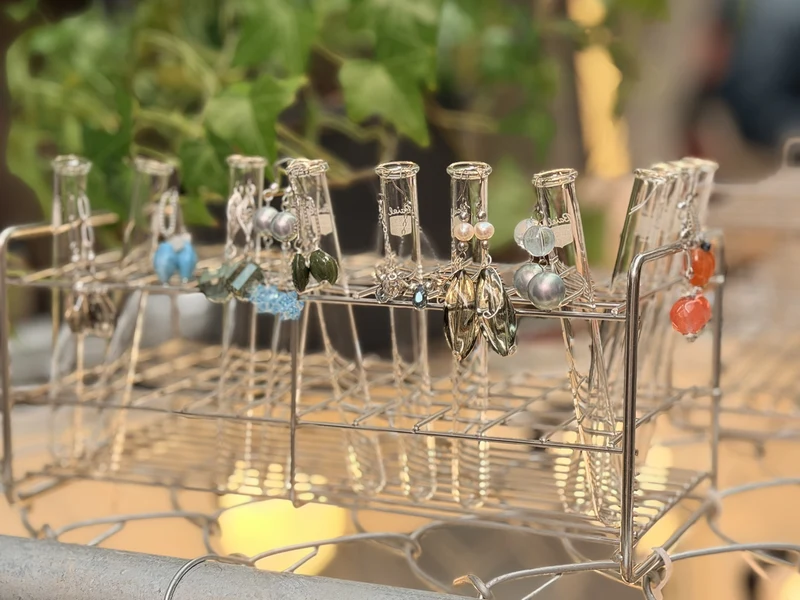
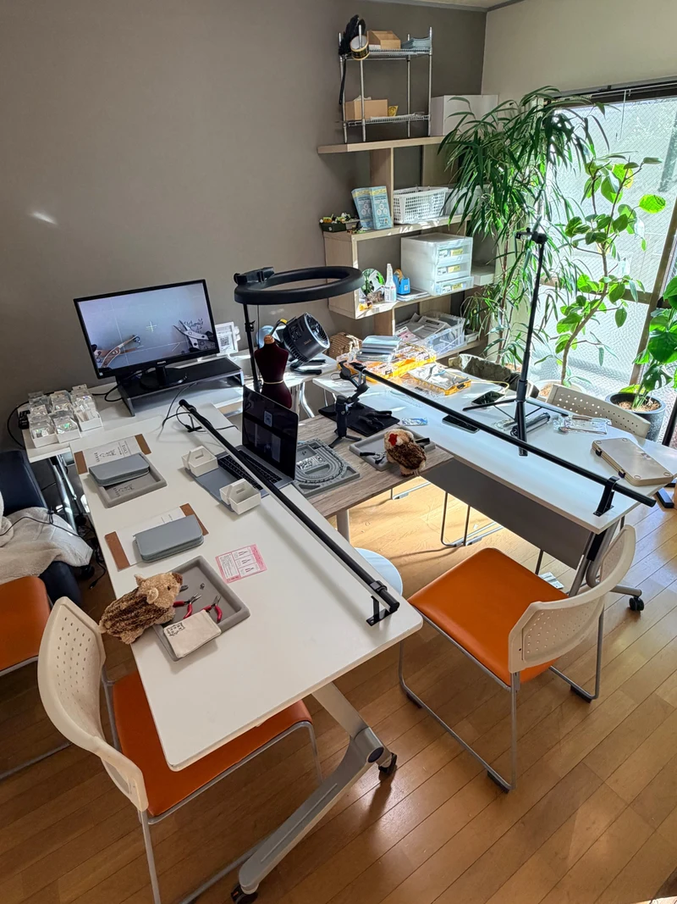
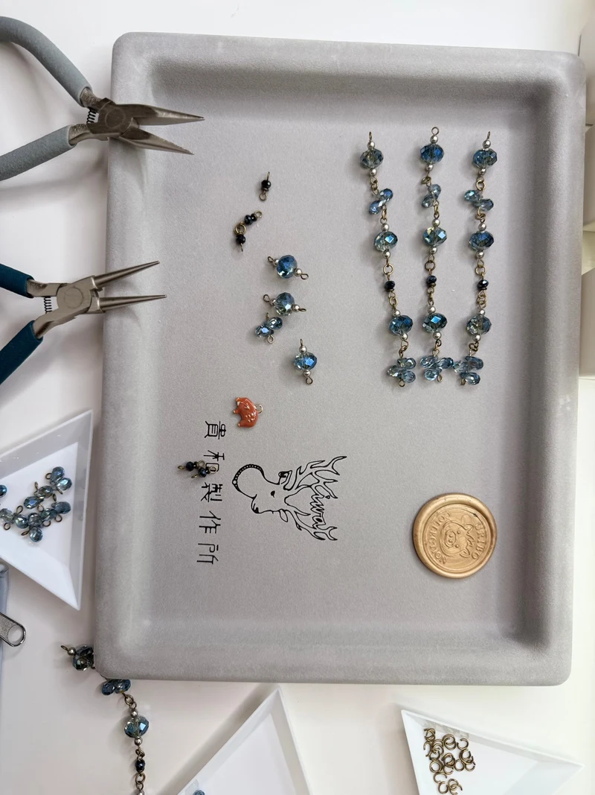

うりぼラボって、どんな所？
うりぼラボは、鹿児島市にあるDX特化型・事業創出型の就労継続支援Ｂ型作業所です。障がいのある人が、サポートを受けながら仕事をする福祉サービスです。DXは、パソコンやスマートフォンを使って仕事をすることです。新しい仕事や商品を考え、形にすることにも取り組んでいます。
- 01アクセサリーを作るピアスやイヤリングを作ります。
- 02週1回の教室に参加する道具の使い方から学べます。
- 03できる作業から始める初めての人も参加できます。
IVYの耳飾りについて
うりぼラボと一緒に作るブランドです
IVY（アイビー）は、蔦のことです。IVYでは、毎日使えるピアスやイヤリングを作っています。 1つのデザインから、ピアスを1組、イヤリングを1組作ります。同じデザインを選べる人は2人までです。
作品は、お店には並びません。マルシェで販売します。 マルシェは、いろいろなお店が集まるイベントです。作った人がお客様に作品を紹介します。 素材には、オーストリア製の最高峰クリスタルガラスとパールを使います。
- 同じデザインは2組：ピアス1組とイヤリング1組を作ります。
- マルシェで販売：作った人が、お客様に作品を紹介します。
- うりぼラボと一緒に制作：教室で学び、できる作業から参加します。

同じデザインは、2組だけ。
ピアス1組とイヤリング1組を作ります
1つのデザインから、ピアスを1組、イヤリングを1組作ります。 IVYでは、この作り方を「双子仕立て（ツインメイド）」と呼んでいます。 2組が売れたあと、同じデザインは作りません。色や材料を変えた作品は、新しいデザインです。
1つのデザイン
同じデザインは、2組だけ作ります。色や材料を変えたものは、別のデザインです。
2種類の耳飾り
ピアスとイヤリングを作ります。ピアスの穴がない人も、イヤリングを選べます。
選べる人は2人まで
ピアスを選ぶ人と、イヤリングを選ぶ人がいます。同じデザインを選べるのは、2人までです。
同じデザインは2組だけです。だから、着ける人にも、プレゼントする人にも、 マルシェで実物を見て選んでほしいと思っています。 どれが一番良いか、作った人やスタッフと一緒に考えられます。
シリーズSTELLAR（ステラ）
STELLAR（ステラ）は、宇宙をイメージしたシリーズです。 青いクリスタルガラスを使っています。太陽の光にあてると、きれいに光ります。

次のマルシェは、まだ決まっていません。
日程が決まったら、お知らせします。
教室から、作品づくりへ。
うりぼラボで作品を作る流れ
週に1回、アクセサリー教室があります。うりぼラボに通う人は、だれでも参加できます。 道具の使い方から始めます。できる作業から参加できます。
教室で、道具の使い方を学ぶ
週に1回の教室です。初めての人も参加できます。
できる作業から始める
作業を分けています。自分にできる作業を選んで参加します。
自分の案で作品を作る
先生や仲間と一緒に作ります。作った作品をマルシェで紹介します。
新しい作品を考える
希望する人は、IVYの作家として作品を作る道を目指せます。契約は、まだ決まっていません。
進む速さは人それぞれです。教室に参加するだけでも大丈夫です。




マルシェの出店と、教室・制作の風景です。
参加する前に知りたいこと
初めてでも参加できますか。
はい。道具の使い方から学べます。
教室には、だれでも参加できますか。
うりぼラボに通う人は、だれでも参加できます。
自分の作品を作れますか。
教室で学び、できる作業から始めます。希望する人は、自分の案で作品を作ることを目指せます。
デザイナー契約は決まっていますか。
いいえ。契約は約束されていません。希望する人が目指す道の一つです。
うりぼラボでは、商品を考えて作っています。
うりぼラボでは、いろいろな商品を考えて作っています。 鹿児島市内の工房と一緒に、「マスクになりたかったスポンジ」も作りました。
ピアスやイヤリングは「IVY」の名前で販売します。 ヘアゴムやブローチは「1-44 by Uribo labo」の名前で販売します。
まずは、見学してみませんか。
うりぼラボは、DX特化型・事業創出型の就労継続支援Ｂ型作業所です。
パソコンやスマートフォンを使った仕事と、新しい商品づくりに取り組んでいます。
障がいや体調に合わせて、自分のペースで通えます。
アクセサリー教室を見たり、マルシェについて聞いたりできます。まずは見学を相談してください。
相談の種類を選び、名前とメールアドレスを入力してください。
うりぼラボの場所
Googleマップで見る
うりぼラボ全体の案内は、公式サイトもご覧ください。